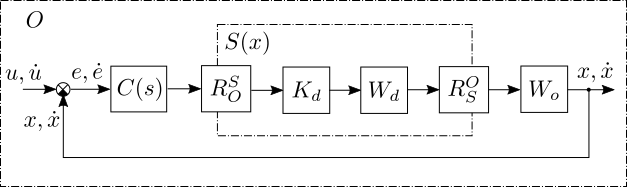
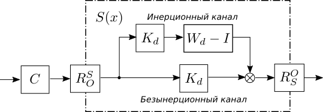
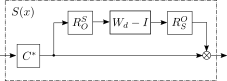

Название: Применение тензорных сигналов в системах автоматического управления объектами в трёхмерном пространстве.
Аннотация: В статье исследованы вопросы построения систем автоматического управления объектами, оперирующими в трехмерном и двумерном пространствах в терминах тензорных сигналов. Введение тензорных сигналов позволяет строить систему управления в наиболее физически обоснованном виде без ограничений на пространство возможных режимов. Использование тензоров положения для замыкания обратной связи позволяет решать задачи пространственного позиционирования методами ТАУ, в том числе методом структурных схем. В работе показано, что особенности работы с тензорными сигналами в условиях относительного вращения систем координат могут быть учтены в структурной схеме в виде переменного матричного коэффициента усиления. Для синтеза сигнала тензорного воздействия предложен метод групп органов управления, подразумевающий поиск линейной комбинации управлений множества органов управления. На основании выкладок делается вывод о принадлежности исследуемого класса систем к классу хорошо линеаризуемых многомерных систем автоматического управления.
Известно, что системы управления работающие в условиях многомерного пространства имеют большое количество перекрёстных связей между каналами управления. Это объясняется тем, органы управления таких систем обычно связаны с самим объектом управления и эффект оказываемый ими на параметры объекта управления зависит от его текущего состояния. Простое решение этой проблемы состоит в ограничении множества рассматриваемых рабочих состояний системы. Однако, синтез управления на основе уравнений движения, линеаризованных в ограниченном множестве опорных режимов, приводит к тому, что поведение системы зависит от выбранных скалярных каналов управления и не полностью реализует возможности технического изделия.
Синтез управления в терминах тензоров более естественен для систем работающих в пространстве, поскольку пространственные физические явления математически описываются в тензорной форме. Переходя к синтезу управления в тензорах мы получаем управление физически обоснованное, независимое от выбора расчетной системы координат и других допущений.
Преимущество перехода к исчислению тензоров состоит в том, что многие перекрёстные связи, оказываются на самом деле всего-лишь следствием линейных преобразований над векторными/тензорными величинами. Такие перекрёстные оказываются частью операций более низкого уровня, а именно операций над тензорами. Тензорный вид уравнений движения и системы стабилизации снижает объёмность выкладок и является естественным для реализации в виде программного кода в рамках объектного подхода.
Отдельно стоит отметить, что использование векторных моторов () и прочих параметров, объединяющих линейные и угловые параметры общей физической природы также уменьшает количество перекрестных связей в системе, поскольку эти компоненты часто оказываются взаимозависимыми при переходах между системами координат, а потому имеет смысл в качестве тензорных сигналов пространственных САУ использовать именно такие, объединенные пары угловых и линейных параметров. Уравнения движения объектов в моторах имеют достаточно простой вид и могут легко анализироваться.
Системы управления с тензорными сигналами являются частным случаем более общего класса многомерных систем, рассматриваемых классиками ТАУ (в частотности ). Описание методов анализа и синтеза многомерных систем встречаются во многих работах. Эти методы могут применяться к рассматриваемому классу систем в общем порядке.
Использование тензорных сигналов и сигналов в виде тензоров положения/ориентации, в тех или иных видах встречается в работах многих авторов. Например, в статье авторы строят систему управления квадрокоптером, используя для замыкания обратной связи кватернион ориентации.
Настоящая статья посвящена математическим закономерностям таких систем, которые, по видимому, до настоящего момента широко не освещались.
Забегая немного вперёд, можно сказать, что формализм тензорных сигналов удобен для построения систем автоматического управления объектами совершающими сложные движения в условиях изотропного пространства, мерность которого выше единицы.
К таким объектам относятся роботы-манипуляторы, дроны, некоторые виды автомашин, шагающие роботы. Хотя задачи, решаемые этими и другими группу ОУ, осуществляющими пространственные движения, могут существенно отличаться, само по себе управление положением и сопутствующими параметрами имеет общую математическую природу требующую общего описания.
Хочется отметить интересное свойство САУ (систем автоматического управления), работающих с тензорными сигналами. Некоторые задачи управления, которые мы можем сформулировать в трехмерном пространстве имеют прямые аналоги в пространстве двумерном. В терминах тензоров системы управления, решающие эти две задачи будут очень похожи друг на друга, что выражается в эквивалентности структурных схем САУ. То есть, фактически, оказывается возможным построение системы управления независимой от мерности пространства задачи. Поскольку практически важные задачи ограничены двумерным и трёхмерным пространствами (а также одномерным в вырожденном случае), вряд ли это наблюдение может иметь значимые практические следствия, но является интересным с теоретической точки зрения.
Тензорным сигналом будем называть изменяющуюся во времени геометрическую сущность, независимую от выбора системы координат, и однозначно представленную набором или эквивалентными наборами своих компонент.
Особенностью тензорного сигнала является множественность его возможных представлений вплоть до того, что в различных частях системы управления один и тот же тензорный сигнал может быть представлен различными способами. Так например, тензор угловой ориентации может быть представлен матрицей поворота, кватернионом или вектором наименьшего поворота и при этом эти формы могут быть заданы в различных базисах. Выбор компонентного представления в вычислительной системе не влияет на динамические свойства системы, поскольку операции над тензорами эквивалентны во всех системах координат.
Тензор ориентации (или тензор поворота) является наиболее общим способом описания углового положения объекта или системы координат. Тензор ориентации является тензором второго ранга и представлен матрицей поворота. Эквивалентной формой представления тензора ориентации являются вектор конечного поворота. Связь между вектором конечного поворота и матрицей поворота определяется следующим образом :
R(ρ) = (cosθ)I + (sinθ)u× + (1 − cosθ)(uuT)
ρ̄ = θu; |u| = 1
Тензор положения является тензором второго ранга и представляет собой тензор поворота расширенный тензором(вектором) трансляции. Тензор положения может быть представлен матрицей 4x4 следующим образом ():
$$P = \begin{bmatrix}R&&r\\0&&1\end{bmatrix}$$
, где R - 3x3 матрица поворота, r - 3x1 вектор трансляции, 0 - 1x3 нулевой вектор, 1 - 1x1 скаляр.
Для построения САР (системы автоматического регулирования) нам потребуется ввести сигнал ошибки положения объекта. Пусть U - тензор уставки положения, а X - тензор текущего положения. Введем два типа невязок.
Аддитивная невязка D:
D = U − X
Мультипликативная невязка E:
U = XE
E = X − 1U
Рассмотрим, как аддитивная невязка связана с мультипликативной.
Подставив ([Uerror]) в ([Derror]) получим:
D = XE − X
D = X(E − I)
, где I - единичная матрица.
Матрица E − I имеет вид:
E − I = (sinθ)u× + (1 − cosθ)(uuT − I)
Поскольку следящие системы управления предназначены для работы в условиях малых невязок, будем считать что θ → 0 и отбросим члены порядок малости которых меньше единицы.
$$\begin{aligned}
sin(\theta) \rightarrow \theta\\
1 - cos(\theta) \rightarrow 0\end{aligned}$$
$$(E - I)|_{\theta\rightarrow0} \approx
\begin{bmatrix}
0 && -\rho_z && \rho_y && r_x\\
\rho_z && 0 && -\rho_x && r_y\\
-\rho_y && \rho_x && 0 && r_z\\
0&&0&&0&&0
\end{bmatrix} = \begin{bmatrix}\rho_e^\times&&r_e\\0&&0\end{bmatrix}$$
, где r и ρ - вектор трансляции и вектор поворота тензора E соответственно.
Таким образом, в условиях малости невязки:
$$D = X (E-I) \approx \begin{bmatrix}X_a&&X_l\\0&&1\end{bmatrix} \begin{bmatrix}\rho_e^\times&&r_e\\0&&0\end{bmatrix} = \begin{bmatrix}X_a\rho_e^\times&&X_ar_e\\0&&0\end{bmatrix}$$
Угловая компонента ρe× представляет из себя антисимметричный тензор и может быть эквивалентно представлена сопряженным вектором, который является вектором поворота мультипликативной невязки ρe. Теперь тензор D может быть представлен в эквивалентной векторном виде:
$$D_{vec} = \begin{bmatrix}X_a\rho_e\\X_ar_e\end{bmatrix}$$
Продифференцируем аддитивную невязку по времени в инерциальной системе координат:
Ḋ = U̇ − Ẋ
В работе показано, что производная тензора поворота может быть представлена в следующей форме
Ṗ = PS
, где P - тензор ориентации, S - правый тензор спина.
Тогда
$$\dot{D} = \begin{bmatrix}\dot{U_a} - \dot{X_a}&&\dot{U}_l-\dot{X}_l\\0&&0\end{bmatrix}
= \begin{bmatrix}U_aS_u - X_aS_x&&V_u-V_x\\0&&0\end{bmatrix}$$
Приняв во внимание, что антисимметричный тензор правого спина может быть эквивалентно представлен вектором правой угловой скорости , приведём уравнения к эквивалентному векторному виду:
$$\dot{D}_{vec} = \begin{bmatrix}U_a\Omega_u-X_a\Omega_x\\ V_u-V_x\end{bmatrix}=\begin{bmatrix}X_a\Omega_e + X_a(E_a-I)\Omega_u\\ X_a\dot{r}_e\end{bmatrix}$$
Обратим также внимание, что если рассматривать невязки Dvec, Ḋvec в собственной и ли близкой к ней системах координат, то Xa → I и сигналы невязок получают вид:
$$\label{simpl1} D_{vec}|_{X_a\rightarrow I} = \begin{bmatrix}\rho_e\\r_e\end{bmatrix} = (E-I)_{vec}$$
$$\label{simpl2}\dot{D}_{vec}|_{X_a\rightarrow I} = \begin{bmatrix}\Omega_e + (E_a-I)\Omega_u\\ \dot{r}_e\end{bmatrix}\approx\begin{bmatrix}\Omega_e\\ \dot{r}_e\end{bmatrix} = \left(\frac{d(E-I)}{dt}\right)_{vec}$$
Выбор векторных форм невязок позволяет при расчете управления избавиться от матриц с целью снижения размерности задачи. Необходимо помнить, что переход к векторной форме корректен только при малой угловой ошибке.
Из приведённых выкладок видно, что сигнал мультипликативной невязки может использоваться для восстановления аддитивной невязки. В дальнейшем аддитивная невязка будет использована для замыкания системы управления в качестве сигнала ошибки. Выбор аддитивной невязки для построения системы стабилизации объясняется её линейностью.
Прежде чем перейти непосредственно к построению замкнутой системы, исследуем одну из принципиальных нелинейностей этого класса систем управления.
Поскольку часть сигналов, из числа тех, что должны анализироваться САУ задано в базовой системе координат, а часть в собственной, оказывается, что переменные состояния по разному реагируют на изменение углового положения объекта управления.
Если сравнить поведение вектора силы тяжести и вектора тяги летательного аппарата, то окажется, что в базовой системе координат вектор силы тяжести неподвижен, а вектор силы тяги вращается вместе с собственной системой координат. Если же мы рассмотрим эти же вектора в собственной системе координат, то вектор силы тяги будет неподвижен, а вектор силы тяжести будет вращаться обратно вращению собственной системы координат.
Фактически, если принять во внимание, что точно так же, в зависимости от принадлежности к родительской системе координат себя ведут все переменные состояния, включая даже те, что не являются физическими величинами, а существуют только в памяти вычислителя, можно сказать, что САУ включает в себя несколько вращающихся/перемещающихся друг относительно друга сигнальных доменов.
В общем случае таких сигнальных доменов может быть больше двух, но мы ограничимся рассмотрением доменов опорной (неподвижной) и собственной (подвижной) систем координат.
Поскольку САУ работает с переменными обоих доменов, некоторые сигналы приходится переводить в неродную систему координат. Это означает, что в точке пересечения границы домена сигнал допомножается на переменный матричный коэффициент, численно равный матрице относительного поворота RAB входной A и выходной B систем координат. RAB зависит от переменных фазового пространства состояний.
Если векторный сигнал ya пересекает границу домена A, то в домене B сигнал будет иметь вид:
yb(t) = RABya(t)
Исследуем производную сигнала:
ẏb(t) = ṘABya(t) + RABẏa(t) = RABSABya(t) + RABẏa(t)
Поскольку тензор правого спина SAB кососимметричен и его умножение на сигнал справа равно векторному произведению правой угловой скорости, получаем
ẏb(t) = RAB(ΩBA × ya(t)) + RABẏa(t) = ẏb(t) = RAB(ΩBA × ya(t) + ẏa(t))
Из анализа первого слагаемого видим, что при наличии относительной угловой скорости между доменами, переменный коэффициент поворота приводит к возникновению нелинейного канала ротационного движения между компонентами тензорного сигнала. При этом, учитывая свойства векторного произведения, эффект этот тем меньше, чем ближе направления векторного сигнала и направление вектора правой угловой скорости относительного вращения доменов.
Рассмотрим управляемый преобразователь сигнала C(s, x), находящейся в системе управления на границе домена.
yb(s) = RAB(x)C(s, x)ya(s)
Поскольку мы можем выбирать функцию C(s, x), зададим C(s, x) в виде
C(s, x) = RBA(x)C*(s, x)
, где C* выбирается согласно прочим условиям. Тогда:
yb(s) = C*(s, x)ya(s)
Отсюда следует, что управляемый оператор на границе доменов позволяет убрать нелинейность системы управления, связанную с переходом сигнала через границу домена. Аналогично можно показать, что управляемый преобразователь сигнала способен компенсировать эффект не только этого, но и прочих переменных коэффициентов усиления и их композиций, в случае, когда они примыкают к нему в структурной схеме.
Пусть структурная схема САР (системы автоматического регулирования) дана в следующем виде.

Здесь: O - домен опорной системы координат. S - домен связанной системы координат. u - тензор уставки положения. x - тензор текущего положения (численно равен S). e - аддитивная невязка в векторном виде. C(s) - контроллер САР. RXY - тензоры поворота систем координат. Kd, Wd - коэффициент усиления и передаточная функция органов управления. Wo - передаточная функция объекта управления.
Наложим на опорную систему условие неподвижности. В качестве опорной системы может быть выбрана любая инерциальная система, например базовая система координат, связанная с землёй.
Сумматор в левой части схемы, вычисляющий сигнал ошибки управления в виде аддитивной невязки получает на вход тензоры положения в полном виде и будет работать по формулам из раздела 2. В общем случае операция выполняемая этим элементом не является суммированием, хотя и проявляет соответствующие свойства при анализе устойчивости, как мы увидем в дальнейшем. Знак сумматора использован для преемственности с классическими структурными схемами ТАУ.
Замкнутый контур системы включает в себя 2 точки перехода сквозь границу сигнальных доменов.
Выделим в подцепочке домена S прямой канал:
RSO(x)KdWdROS(x) = RSO(x)KdROS(x) + RSO(x)(Kd − Kd + KdWd)ROS(x)=
= RSO(x)KdROS(x) + RSO(x)Kd(Wd − I)ROS(x)

Теперь задав функцию управляемого преобразователя аналогично ([kcomp]), компенсируем нелинейность безынерционного канала:
C(s, x) = C*(s, x)ROS(x)Kd − 1RSO(x)
При таком управлении, эквивалентная схема участка цепи будет выглядеть так:

Эта форма управления привела к тому, что замкнутый контур САР разделился на линейную и нелинейную части. Можно показать, что для физически реализуемых систем функция (Wd − I) стремится к нулю при s → inf . Таким образом нелинейная составляющая сигнала проявляет себя ограниченный период времени после эволюции системы. Нелинейный эффект связан с переходным процессом органов управления, а длительность эффекта определяется постоянной времени передаточной функции Wd.
Несложно заметить, что расположение контроллера управления слева или справа от границы домена весьма условно. Как мы увидим дальше, когда будем подробнее говорить об органах управления, функция контроллера может быть достаточно сложной, и сочетать компоненты, работающие как в собственной, так и в опорной системах координат.
Для анализа устойчивости системы выберем другую опорную систему координат и связанный с ней тензор положения Q, таким образом, чтобы в системе Q тензор X (а соответственно тензор собственной системы координат S и тензор уставки U) оказались малыми и могли быть эквивалентно представлены в векторном виде. Такой выбор Q будет соответствовать линеаризации САР в этом режиме.
$$x = \begin{bmatrix}\rho_x\\r_x\end{bmatrix};
u = \begin{bmatrix}\rho_u\\r_u\end{bmatrix}$$
e = u − x
Рассмотрим случай, когда динамикой Wd возможно пренебречь. Такое допущение уместно, когда постоянные времени органов управления, меньше постоянных времени регулятора C*. В этом случае Wd обращается в единичный коэффициент усиления и инерционный канал можно отбросить.
Если C* и Wo линейны, такая система относится к классу многомерных линейных систем. Методы анализа устойчивости таких САР проработаны .
Предположим, что мы доказали устойчивость этой системы. Очевидно, что, при работе во всём диапазоне возможных положений, с течением времени система покинет область линеаризации выбранного режима. Однако существует бесконечное множество опорных систем Q и передаточные функции линеаризованной системы будут эквивалентны во всех, а значит, если доказать устойчивость в одном опорном режиме, будет автоматически доказана устойчивость во всех опорных режимах.
Хотя в общем случае, доказательство устойчивости на непрерывном множестве опорных режимов не является доказательством того, что переходный процесс когда-либо завершится, можно предположить, что квазилинейный сферический характер зависимости переменных состояния тензоров положения налагает менее серьёзные ограничения и система будет ожидаемо себя вести во всём диапазоне возможных состояний положений и скоростей.
В качестве опорной системы Q удобно в каждый момент времени рассматривать мгновенную неподвижную систему координат, тензор положения которой численно совпадает с тензором собственной системы координат. Хотя такая система будет непрерывно перемещаться, мы всегда можем утверждать, что данная опорная система существовала за какое-то время до и будет существовать какое-то время после, а значит анализ устойчивости, не имеющий очевидного смысла для мгновенной системы, в такой системе всё равно имеет силу.
Следует отметить, что тензорная природа сигналов позволяет не переходить для расчётов в опорную систему, относительно которой доказана линейность, поскольку операции над тензорами эквивалентны во всех системах. Это позволяет достаточно вольно обращаться с координатными системами, каждый раз выбирая те из них, в которых вычисление выглядит наиболее геометрически обусловленным или оптимальным по быстродействию.
До этого момента мы рассматривали абстрактное тензорное управляющее воздействие, однако в реальности практически не встречаются органы управления способные к генерации многомерного тензорного управляющего воздействия. Этот очевидный недостаток разрешается при использовании нескольких совместно действующих органов управления.
Группой органов управления будем называть совокупность органов управления, совместно решающих задачу построения тензора управления F = F(v1, v2, ..., vn), где n - количество органов управления. Если относительно управляющих воздействий органов управления выполняется принцип суперпозиции, то F является линейной комбинацией. Здесь и далее тензор F выражается в векторном виде.
fi = ajivj
F = AV
Матрица A является прямоугольным переменным матричным коэффициентом, образованным векторами чувствительностей органов управления. Количество её строк соответствует размерности вектора F, а количество столбцов числу органов управления в группе.
К системе линейных уравнений ([lincomb]) сводится задача поиска управляющего воздействия отдельных органов группы, поскольку вектор желаемого управляющего воздействия F является известным, а вектор воздействий органов группы V требуется найти. Система может иметь одно решение, не иметь решений вовсе или же иметь множество решений. Случай отсутствия решений означает, что желаемое управление, требуемое от группы не может быть выполненно (вероятно, в силу физической несовместимости). Случай множества решений означает, что желаемое управление может быть достигнуто множеством способов. Поиск одного из множества решений возможен, например, с использованием метода поиска псевдообратной матрицы, однако вероятно, разработчик САУ захочет задать правила выбора конкретного решения из доступного множества.
Поиск оптимального решения на данном множестве требует введения функционала оптимизации и, возможно, дополнительных условий.
Φ(V) − > min
AV = F
CV < = d
Если Φ(V) - квадратичный функционал, а дополнительные условия отсутствуют, задача является задачей квадратичного программирования:
$$\Phi(V) = \frac{1}{2}V^TQV+c^TV -> min$$
AV = F
, которая разрешается в виде.
$$\label{slau}
\begin{vmatrix}
Q & A^T\\
A & 0
\end{vmatrix}
\begin{bmatrix}
V\\
\lambda
\end{bmatrix}
=
\begin{bmatrix}
-c\\
F
\end{bmatrix}$$
Здесь λ - вектор дополнительных множителей, Q - диагональная матрица весов, а c - вектор смещения, который может быть использован для задания предпочтительного направления сигнала.
Сведение задачи построения вектора управления к квадратной или прямоугольной СЛАУ интересно в том плане, что открывает возможности по применению итеративных методов решения исходной СЛАУ. Итеративные методы, в отличие от прямых лучше подходят для реализации в аналоговых и импульсных вычислительных машинах, в частности, в аппаратных нейросетях.
Вернемся к вопросу поиска матрица A из уравнения ([lincomb]). Как было сказано выше, уравнение в этой форме может быть записано, если относительно воздействия органов управления выполняется принцип суперпозиции. Матрица A есть матрица частных производных $\frac{\partial{f^i}}{\partial{v^j}}$. Матрица строится из векторов чувствительности выходного вектора F к изменению компоненты вектора V.
Практически значимыми примерами групп органов управления являются системы с суперпозицией силовых и мгновенных кинематических воздействий (см. таблицу). Для них матрица А формируется из компонент линейного оператора переноса соответствующего воздействия.
| Силовой перенос | Кинематический перенос |
|---|---|
| |F | |
| |F | |
| |V | |
| |V |
На примере этих вариантов управляющих параметров видно, что вид уравнений переноса, используемых при составлении матрицы A зависит от типа управляющего воздействия. В общем случае уравнения переноса могут иметь более сложную нелинейную форму и зависеть от большего числа параметров.
Из рассмотренных форм операторов переноса ([eq:ftrans], [eq:ctrans]) следует, что линейные и угловые параметры при построении желаемого управления должны рассматриваться совместно. Такой подход свойственен для винтового исчисления / исчисления векторных моторов. Следует отметить, что векторный мотор является тензором и к нему применимо всё, описанное в предыдущих разделах.
С точки зрения структурной схемы группа органов управления состоит из вектора передаточных функций отдельных органов управления и линейного решателя.
, где L - линейный решатель, а x - вектор состояния системы в целом.
Линейный решатель является вычислительной сущностью, реализуемой как часть контроллера C(s, x), рассмотренного выше.
Переменные матричные коэффициенты L и A задают прямое и обратное координатное преобразование, Если рассматривать их в таком ключе, то группа органов управления напоминает по свойствам уже рассмотренные выше координатные домены, с той лишь разницей, что данное преобразование в общем случае меняет мерность системы. Как и в случае с вращающимися доменами, здесь проявляются нелинейные эффекты, которые тем ниже, чем меньше отношение постоянной времени органов управления к постоянным времени регуляторов САР и чем медленнее изменяется матрица A(x). Если матрица A является константой, нелинейные эффекты не проявляются.
Данная система будет достигать наилучшего управления, если передаточные функции органов управления близки или каким-либо образом скомпенсированы. Исходя из этого соображения лучше объединять в группы органы управления схожей физической природы.
Проведенный анализ показывает, что принципиальных проблем для использования тензорных сигналов в системах автоматического управления нет, причем такие системы являются частным случаем более общего класса многомерных систем управления и достаточно хорошо поддаются линеаризации. Введение метода групп органов управления решает проблему получения тензорного сигнала управляющего воздействия. Нелинейные эффекты, возникающие в системе сводятся к эффектам накладываемым переменными матричными коэффициентами.
Тензорные формы сигналов удобны для реализации в аппаратно программном виде, благодаря высокому уровню декомпозиции. В контуре управления используются векторно-матричные операции, что позволяет синтезировать управление как в цифровом, так и в аналоговом виде, включая расчет вектора воздействия группы органов управления при использовании итеративных методов.
Приведенные выкладки не опираются на физические особенности какой-либо конкретной группы объектов управления, а потому могут быть применены к широкому классу систем.
9 Диментберг Ф. М. Винтовое исчисление и его приложения к механике. М.:Наука, 1965 Бесекерский, Попов. Теория автоматического управления. Full Quaternion Based Attitude Control for a Quadrotor, 2013, Emil Fresk and George Nikolakopoulos П.А.Жилин. Векторы и тензоры второго ранга в трёхмерном пространстве. Картаев Е.А. Преобразования Гиперкомплексных чисел. 2017.